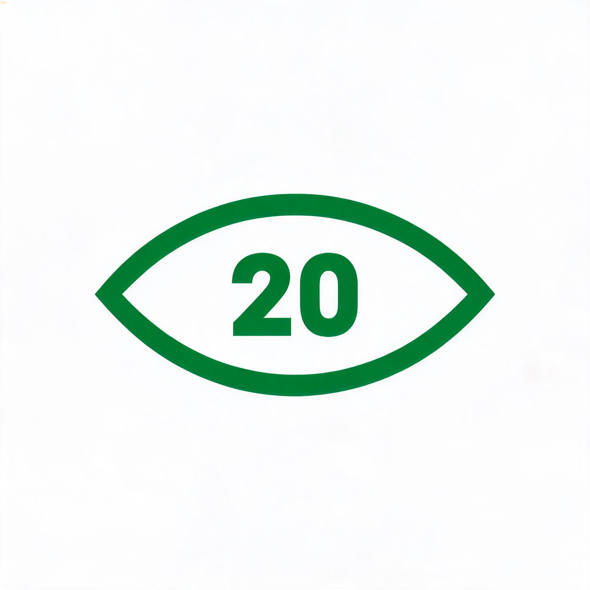

界面一览



每用眼 20 分钟，望远 20 秒 —— Windows 护眼提醒小工具
望远休息 · 眨眼训练 · 久坐提醒 · 喝水提醒
正在检测线路，为你推荐最快下载源…
每 20 分钟弹一张居中倒计时卡，引导看向 6 米外放松睫状肌。基于美国眼科学会推荐的 20-20-20 法则。
屏幕专注时眨眼频率会明显下降，可能导致干眼。眼睛开合动画引导完整眨眼，帮助重建泪膜。
默认每 60 分钟提醒站起来走动、伸展。久坐是常见的健康风险因素，定时打断是有效的应对方式。
专注时容易忘记喝水。默认每 45 分钟温和提醒一次。
到期时间接近的提醒自动合并为一张卡同时提醒；重排后任意两个提醒至少错开 5 分钟，减少打扰。
倒计时期间检测到键鼠操作或全屏应用（游戏/电影）→ 倒计时自动暂停；看视频、听歌不受影响。真正休息才算数。
按日记录完成、跳过与休息时长，本地存储，不上传。让坚持看得见。
启动静默检查，一键完成下载→替换→重启（约 2 秒）。国内 Gitee 直连，国外 GitHub 回退。
从上方 Gitee 或 GitHub Releases 下载 EyeCare20.exe，体积很小，无需安装。
绿色软件即刻驻留托盘。若 SmartScreen 提示：右键 exe → 属性 → 解除锁定。
一次设置长期有效。双击托盘图标随时查看剩余倒计时。
每使用屏幕 20 分钟，看向 20 英尺（约 6 米）外的物体 20 秒，是缓解数字眼疲劳的常见建议，美国眼科学会等机构推荐。
长时间使用电脑的办公族、程序员、学生，需要定时望远休息、眨眼训练、久坐和喝水提醒的 Windows 用户。软件体积小、零依赖，适合追求轻量绿色工具的用户。
软件本身不联网、不上传数据，所有配置和统计本地存储。仅在检查更新时访问 Gitee/GitHub 的 update.json 与发行版附件。
可以。四类提醒可独立开关与设间隔，智能合并与错峰机制避免同时打扰。
Windows 10/11 已预装 .NET Framework 4.8，下载即用。更旧的 Windows 7/8 需手动安装运行时。
不是。EyeCare20 是健康辅助工具，帮助养成定时休息的习惯，不能替代医疗建议。持续眼不适请就医。